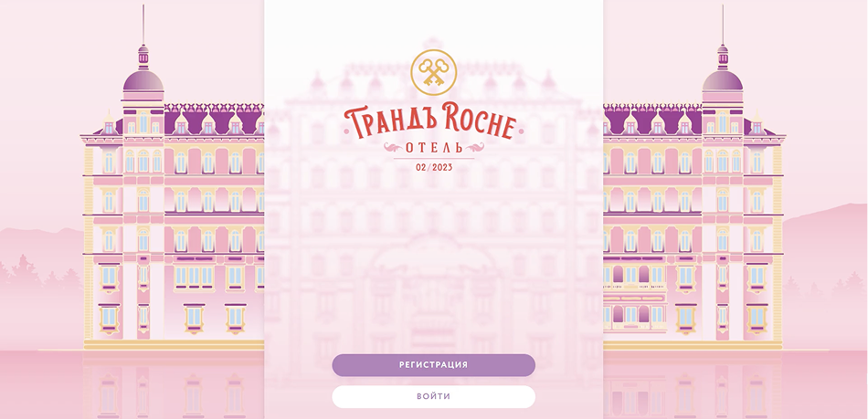
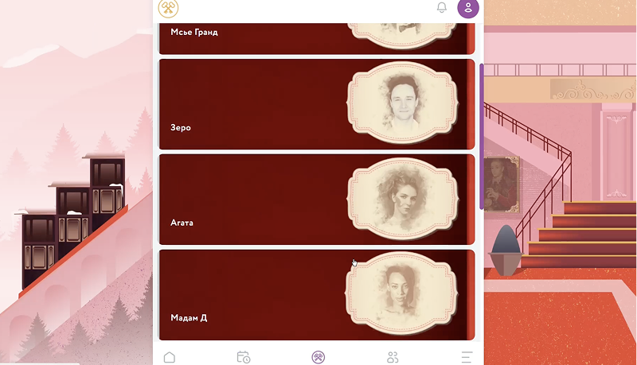

ЗАДАЧА
Объединить 500 участников цикловой конференции одной игровой механикой, поддержать вовлечённость между деловыми блоками и не дать программе распасться на набор отдельных активностей.
ЛИЧНОЕ ПОРТФОЛИО2026
Immersive quest
Трёхдневный квест для 500 участников цикловой конференции: онлайн-погружение до заезда, тайное общество, живые персонажи, командные задания и финальное посвящение.



Объединить 500 участников цикловой конференции одной игровой механикой, поддержать вовлечённость между деловыми блоками и не дать программе распасться на набор отдельных активностей.
Grand Roche Quest — иммерсивный квест о вступлении в Crossed Keys Society, тайное общество людей, которые умеют находить ключ к любой задаче, человеку и двери.
Гибридная игра на три дня: онлайн-предактивация до заезда, игровая платформа, персонажи-проводники в отеле, личные и командные задания, рейтинги, интеграции в деловую программу и финал-посвящение.


Игра начиналась ещё до заезда: участники заходили на платформу, слушали легенду в формате аудиоподкаста, знакомились с персонажами, правилами, командой и первыми заданиями.
В отеле квест выходил в офлайн: гостей встречали носильщики, в лобби работала консьерж-служба с Месье Густавом и Зеро, звучала живая музыка и появлялись персонажи.
Платформа стала игровым хабом: задания, рейтинги, командные чаты, программа, карта отеля, профили персонажей, опросы и голосования работали в реальном времени.
За участие в программе гости получали игровую валюту — «клубеки»: за вопросы спикерам, утренние активности, ретро-фото, голосования и другие игровые действия.
Три дня игры сходились в гранд-финале: участники дошли до посвящения в Crossed Keys Society и завершили конференцию внутри общей истории.


ОТКРЫТА К НОВЫМ ЗАДАЧАМ
И ИНТЕРЕСНЫМ БРИФАМ